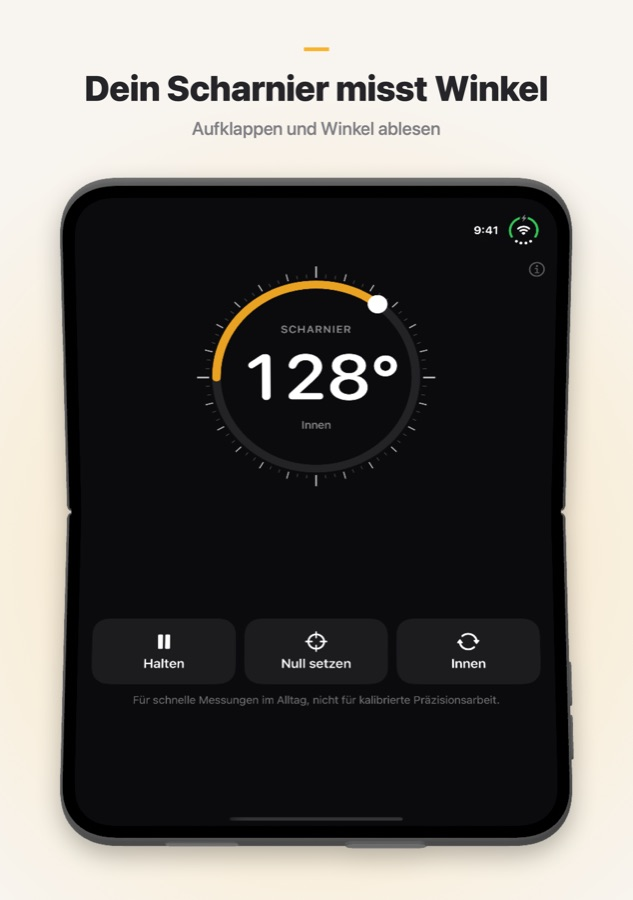
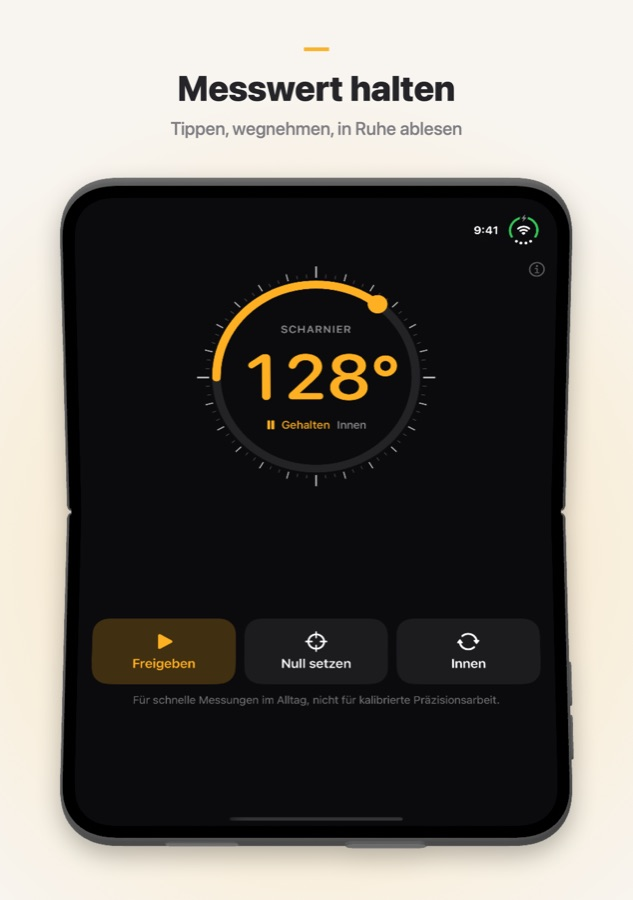
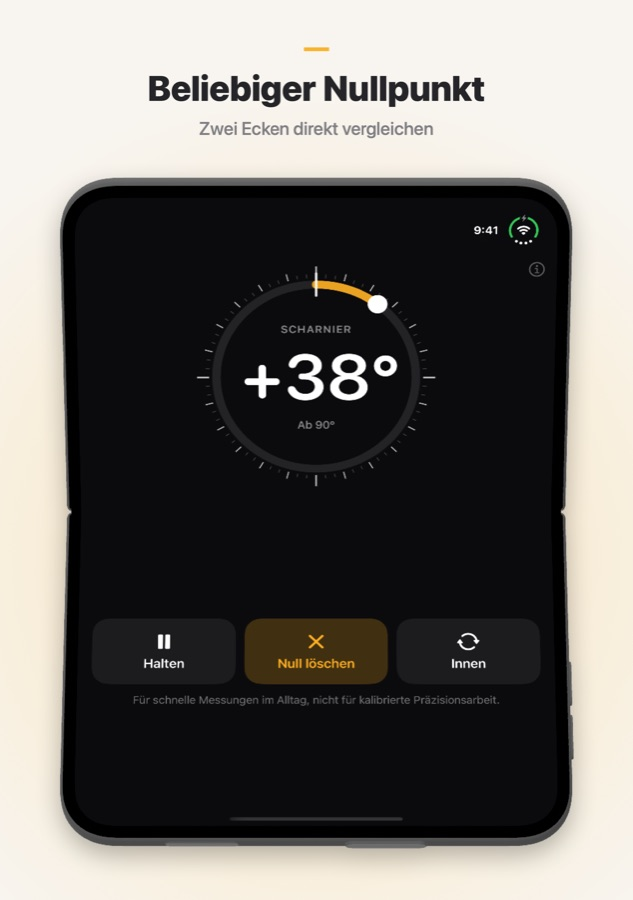

Fold Angle
Dein faltbares iPhone weiß längst, wie weit es geöffnet ist. Fold Angle macht aus dem Scharnier einen Winkelmesser: Setz das iPhone in eine Ecke, leg es an eine Tür oder über die Kante einer Kiste und lies den Winkel zwischen den beiden Hälften ab. Auf anderen iPhones und iPads funktioniert die App als Neigungsmesser.
Erfordert iOS 17 oder neuer.
Download


Support
Du hast eine Frage, einen Fehler gefunden oder brauchst Hilfe mit der App? Schreib uns. Wir lesen jede Nachricht.
Häufige Fragen
- Auf welchen Geräten funktioniert die App?
Fold Angle ist für das iPhone Duo gemacht und liest dort den Scharnierwinkel direkt aus. Auf anderen iPhones und iPads funktioniert die App als Neigungsmesser: Sie zeigt mit den Bewegungssensoren, wie weit das Gerät aus der Waagerechten geneigt ist. - Wie behalte ich einen Messwert?
Tippe auf Halten, um die Zahl festzuhalten. Dann nimm das iPhone weg und lies ab. Mit Freigeben geht es zurück zur Live-Messung. Doppeltippen auf die Zahl funktioniert auch. - Was macht „Null setzen“?
Der aktuelle Winkel wird zum neuen Nullpunkt. So vergleichst du zwei Ecken oder misst, wie weit eine Tür aufgeht. Mit Null löschen kehrst du zu absoluten Winkeln zurück. - Was bedeuten „Innen“ und „Außen“?
Innen ist der Winkel zwischen den beiden Bildschirmen, Außen der Winkel auf der Rückseite der Falz (360° minus innen). Tippe auf die Taste, um umzuschalten. - Flach hingelegt zeigt es etwa 2° statt 0°.
Im Neigungsmodus hebt der Kamerabuckel eine Seite des iPhone an. Tippe zuerst auf der flachen Fläche auf Null setzen und miss von dort aus, oder leg das iPhone auf das Display. - Ich spüre kein Tippen.
Fold Angle tippt leicht alle 15° und kräftig bei genau 90°. Wenn du nichts spürst, prüfe, ob Einstellungen → Töne & Haptik → System-Haptik eingeschaltet ist. - Wie genau ist die App?
Sie ist für schnelle Messungen im Alltag gedacht, nicht für kalibrierte Präzisionsarbeit. Wenn es genau sein muss, prüfe mit einem echten Winkelmesser oder einer Wasserwaage nach. - Sammelt die App meine Daten?
Nein. Fold Angle hat kein Konto, keine Server und stellt keine Netzwerkanfragen. Sensorwerte bleiben auf deinem Gerät.
Screenshots



Rechtliches
Datenschutzerklärung
Zuletzt aktualisiert: Oktober 2026
Einleitung
Fold Angle folgt einem einfachen Grundsatz: Deine Daten gehören dir. Diese Datenschutzerklärung erklärt, auf welche Informationen die App zugreift und wie sie damit umgeht. Kurz gesagt: Wir erhalten nichts davon.
Sensoren
Fold Angle liest den Scharnierwinkel (auf dem iPhone Duo) und die Bewegungssensoren (auf anderen Geräten) nur, um den Winkel auf dem Bildschirm anzuzeigen. Diese Werte werden auf deinem Gerät verarbeitet und nie gespeichert, hochgeladen oder geteilt.
Keine Datenerfassung
Wir erfassen, speichern, verfolgen oder verarbeiten keine personenbezogenen Daten. Die App erfordert kein Konto und keine Registrierung.
Keine Internetverbindung
Fold Angle funktioniert vollständig offline. Die App stellt keine Netzwerkanfragen.
Käufe
Käufe werden vollständig von Apple über den App Store abgewickelt. Wir erhalten nie deine Apple-ID, Zahlungsmethode oder andere Zahlungsinformationen.
Drittanbieterdienste
Fold Angle verwendet keine Analyse-, Werbe- oder Tracking-Dienste von Drittanbietern. Es werden keine Daten an Dritte weitergegeben.
Datenschutz für Kinder
Da keine personenbezogenen Daten erfasst werden, erfüllt Fold Angle den Children's Online Privacy Protection Act (COPPA) und vergleichbare Vorschriften weltweit.
Änderungen dieser Erklärung
Wir können diese Datenschutzerklärung von Zeit zu Zeit aktualisieren. Änderungen gelten ab ihrer Veröffentlichung. Bitte schau regelmäßig auf dieser Seite vorbei.
Kontakt
Bei Fragen zu dieser Datenschutzerklärung erreichst du uns unter: support [at] hoshinosoftware [dot] com
Nutzungsbedingungen
Zuletzt aktualisiert: Oktober 2026
Annahme der Bedingungen
Indem du Fold Angle herunterlädst oder verwendest, stimmst du diesen Nutzungsbedingungen zu. Wenn du nicht zustimmst, verwende die App bitte nicht.
Lizenz
Hoshino Software gewährt dir eine persönliche, nicht übertragbare, nicht exklusive Lizenz zur Nutzung von Fold Angle auf deinen Apple-Geräten gemäß diesen Bedingungen und den App Store-Nutzungsbedingungen von Apple.
Zulässige Nutzung
Du darfst Fold Angle nur für rechtmäßige Zwecke verwenden. Du verpflichtest dich, die App nicht in einer Weise zu nutzen, die gegen geltende Gesetze oder Vorschriften verstößt.
Kein Präzisionsinstrument
Fold Angle ist für schnelle Messungen im Alltag gedacht. Die Werte hängen von den Sensoren deines Geräts ab und können um ein Grad oder mehr abweichen. Verlass dich nicht darauf, wenn ein Fehler zu Verletzungen, Schäden oder Verlusten führen kann.
Keine Gewährleistung
Fold Angle wird „wie besehen“ ohne ausdrückliche oder stillschweigende Gewährleistung bereitgestellt. Wir garantieren nicht, dass die App fehlerfrei, unterbrechungsfrei oder für einen bestimmten Zweck geeignet ist.
Haftungsbeschränkung
Soweit gesetzlich zulässig, haftet Hoshino Software nicht für direkte, indirekte, zufällige, besondere oder Folgeschäden, die aus der Nutzung oder der Unmöglichkeit der Nutzung von Fold Angle entstehen.
Änderungen dieser Bedingungen
Wir können diese Nutzungsbedingungen von Zeit zu Zeit aktualisieren. Wenn du die App nach der Veröffentlichung von Änderungen weiter nutzt, gilt dies als Zustimmung zu den geänderten Bedingungen.
Anwendbares Recht
Diese Bedingungen unterliegen dem Recht der Rechtsordnung, in der Hoshino Software tätig ist.
Kontakt
Bei Fragen zu diesen Nutzungsbedingungen erreichst du uns unter: support [at] hoshinosoftware [dot] com